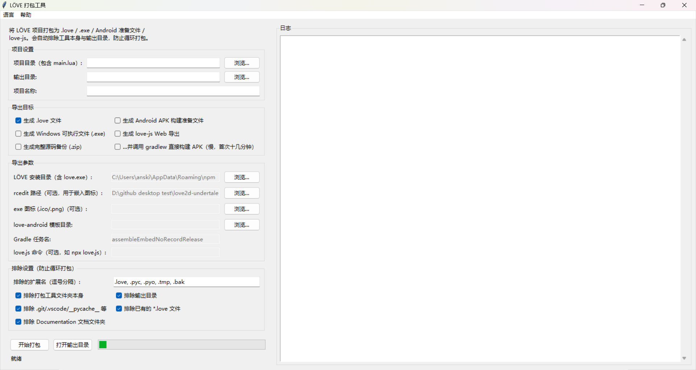

导出与发布
游戏能跑了、内容也做完了，接下来就是把它变成别人能下载、能打开的东西。
这一步分两件事：先把配置改对（conf.lua 里的三个地方），再把项目交给打包工具。引擎自带打包工具，路径是项目根目录下的 Packager/ 。
发布前：先把配置改对¶
打开项目根目录的 conf.lua ，最上面几行就是给发布用的。
_RELEASED¶
-- Set to true when building the game for release
_RELEASED = false
改成 true 。它现在只控制一件事：关掉 Windows 的黑色控制台窗口（ t.console = not _RELEASED ）。
开着控制台发布等于把调试信息送给玩家
控制台里会滚动各种 [WARNING] 、路径、内存读数。自己在开发时留着它很有用，发布包一定要关。
_INFO¶
_INFO = {
TITLE = "Soul Engine - v3.0.0",
VERSION = "0.0.0", -- 你自己游戏的版本号
AUTHOR = "end",
CONTACT = "NaN",
WEBSITE = "NaN",
}
TITLE是窗口标题，也是出错画面上印的名字。VERSION是你的游戏的版本号，和引擎版本无关（引擎版本看_VER，别去改它）。AUTHOR/CONTACT/WEBSITE会原样印在出错画面上给玩家看。
把 _INFO 填全再发布
玩家报错时能看到的那张 "Fatal Error" 画面，最后一段就是 _INFO 这几项。
留着 NaN 发布，等于玩家拿着报错截图也找不到你。
_VER 是引擎版本，不要动
第一行的 _VER = "3.0.0-stable" 是引擎版本号。
自己项目的版本请改 _INFO.VERSION ，两个别搞混。

打包前先跑一次兼容性检查¶
打包工具里带了一个独立的检查器，只读不改，专门找那些"在 Windows 上能跑、换到别的平台就炸"的问题。
cd Packager
python check_compat.py # 默认严格度 3（最严格）
python check_compat.py --strict 2 # 按 exe 发布 / Linux 检查
python check_compat.py --all # 三种严格度一次性对比
Windows 下也可以直接双击 Packager/check_compat.bat —— 它默认按严格度 2 跑（和直接跑 python check_compat.py 的默认值 3 不同）。
三种严格度对应三种目标平台：
| 严格度 | 目标平台 | 说明 |
|---|---|---|
1 |
Windows 开发端 | 最宽松。NTFS 大小写不敏感，require 写错大小写也能命中 |
2 |
exe 发布 / Linux 等 | 较严格。.love 在区分大小写的文件系统上解包后，引用的大小写必须和磁盘一致 |
3 |
love.js (Web) | 最严格。love.js 是 Lua 5.1 语义，goto 、::label:: 、位运算、0b 字面量都会编译失败 |
它会报出三档问题：error（该严格度下会跑不起来）、warning（可能踩雷，比如 loadstring 这类 5.1 专属 API）、info（仅供参考）。
大小写是打包最常见的翻车点
Windows 上 Sprites.CreateSprite("Overworld/frisk/xxx.png") 和实际文件 Overworld/Frisk/xxx.png 能对上，
打包到 Android / Linux 就整张图找不到。
检查器在严格度 2 / 3 下会把这类引用全部揪出来。打完包发现"图白了/没了"，第一个怀疑的就是它。
它是静态检查，不能替代真跑一遍
检查器不可能 100% 复现运行时。它只专注可可靠判定的雷区（大小写、Lua 版本语法、模块缺失、基础语法）。
真要保险，至少把导出的 exe 在本机跑一遍。
用打包工具导出¶
打包工具是一个 Python + tkinter 的图形界面程序，不需要装任何第三方库（只用标准库）。
启动方式（Windows 上双击也行）：
cd Packager
run.bat # 或手动：python build_tool.py
界面上要填的东西：
| 字段 | 填什么 |
|---|---|
| 项目目录 | 包含 main.lua 的项目根目录（填错会提示找不到 main.lua ） |
| 输出目录 | 默认是 <项目>/Export |
| 项目名称 | 产物文件名用它 |
| LÖVE 安装目录 | 含 love.exe 的那一层，导出 exe 才需要 |
| rcedit 路径 | 可选，给 exe 写图标 / 版本信息用（仓库里已经带了 rcedit-x64.exe ） |
| exe 图标 | 可选，.ico / .png |
| love-android 模板目录 | 导出 Android 准备文件才需要 |
| love.js 命令 | 可选，例如 npx love.js |
然后勾选要导出哪些目标：
| 目标 | 产物 | 说明 |
|---|---|---|
.love 文件 |
<名称>.love |
游戏 zip，可直接被 LÖVE 加载 |
| Windows 可执行文件 | <名称>-win/ 文件夹 |
love.exe 与 .love 合并成独立 exe，连同所需 DLL 一起复制 |
| Android APK 准备文件 | <名称>-android/ |
复制 love-android 模板并把 game.love 放好；可勾选顺带调 gradlew 直接出 APK |
| love-js Web 导出 | <名称>-web/ |
复制 game.love 供 love.js 使用，可自动调用 love.js 生成网页版 |
| 完整源码备份 | <名称>-source.zip |
整份源码打包备份 |
导出后的输出目录大概长这样：
Export/
├── game.love # .love 文件
├── game-win/ # Windows exe 文件夹（含 DLL）
│ ├── game.exe
│ ├── love.dll
│ └── ...
├── game-android/ # Android 准备文件
│ └── app/src/embed/assets/game.love
├── game-web/ # love-js 准备文件
└── game-source.zip # 源码备份
工具自己一定会被排除，别手动加回来
为了避免"把工具本身和产物再打进去"造成内存炸弹，以下内容始终被排除：
- 工具自身脚本（
build_tool.py） - 工具所在文件夹（
Packager/，当它在项目内时） - 输出目录（默认
<项目>/Export） - 已存在的
*.love文件（可在"排除设置"里关掉）
.git / .vscode / __pycache__ / .workbuddy 默认也会跳过，这些都可以在界面上调。

Windows：exe¶
需要本机装了 LÖVE（界面里要指向含 love.exe 的目录）。
产物是一个文件夹，不是单个 exe —— love.dll 、SDL2.dll 这些必须和 exe 待在一起，缺一个就打不开。
发布时有两种送法：
- 整个文件夹压成 zip 发出去，玩家解压后双击里面的 exe。
- 做成安装包（自行用 Inno Setup / NSIS 之类），这里不做展开。
别只发 exe 那一个文件
game.exe 单独拷出去必然报缺 DLL。要发就发整个 -win/ 文件夹。
Android：APK¶
Android 出包是两段，出问题时要先分清卡在哪一段：
- 内容段：把项目打成
game.love塞进模板。这段不需要 Android 环境，失败得也快。 - 工具链段：JDK / SDK / NDK / CMake / Gradle 必须满足模板自己的构建文件要求的版本。几乎所有失败都在这段，而且失败得很慢。
准备模板（只需一次）¶
git clone --recurse-submodules https://github.com/love2d/love-android
--recurse-submodules 不能省，否则会报 Missing LÖVE 或缺 liblove.so 。已经克隆过但漏了子模块：
git submodule sync --recursive
git submodule update --init --force --recursive
需要 JDK 17（不能更高也不能更低）、CMake ≥ 3.21，并设置 ANDROID_HOME 。
版本要求以模板的构建文件为准，别照抄教程
NDK / SDK 版本在不同 love-android 分支上差很多，写错会直接在 CMake 配置阶段失败。去模板里读：
| 看哪个文件 | 读什么 |
|---|---|
app/build.gradle |
ndkVersion 、compileSdk 、targetSdk 、minSdk 、cmake { version } 、abiFilters |
gradle/wrapper/gradle-wrapper.properties |
需要的 Gradle 版本 |
app/src/main/cpp/love/src/common/version.h |
这个分支对应哪版 LÖVE |
当前 main 分支（LÖVE 12.0）大致要求：NDK 27.3.13750724 、compileSdk / targetSdk 35 、minSdk 23 、CMake 3.21.0+ 、ABI armeabi-v7a / arm64-v8a / x86_64 。
game.love 放在哪¶
| 模板版本 | 目录 | Gradle 任务 |
|---|---|---|
现代模板（有 app/src/embed ） |
app/src/embed/assets |
assembleEmbedNoRecordRelease |
| 旧模板 | app/src/main/assets |
assembleNormalRecord |
打包工具会自动判断用哪个，并在日志里说明。
放错目录不会报错
放错只会让 APK 装上去启动后是一个空的 LÖVE 界面。所以出包之后一定要复核，别只看"构建成功"。
Gradle 任务¶
默认填 assembleEmbedNoRecordRelease 。
- 游戏要用麦克风录音 → 换成
assembleEmbedRecordRelease - 要上架 Play 的 AAB →
bundleEmbedNoRecordRelease
构建日志会实时输出到工具右侧的面板。首次要编译原生库，十几分钟到一小时都很正常。
之后别手痒跑 clean
clean 会把原生编译产物全扔掉，下一次又是完整的一小时。
改 Lua 或素材属于常规迭代，重打包 game.love 再加增量 Gradle 只要几十秒。
签名：出包之后多半还要补一步¶
release 构建产出的很可能是未签名的 APK（文件名里带 -unsigned ）。未签名的 APK 装不上，手机上只会说"应用未安装"，不会告诉你原因。
要自己签一次（zipalign 和 apksigner 在 <SDK>/build-tools/<版本>/ 里）：
zipalign -p -f 4 unsigned.apk aligned.apk
keytool -genkeypair -keystore my.keystore -alias my -keyalg RSA \
-keysize 2048 -validity 10000 -storepass 你的密码 -keypass 你的密码 \
-dname "CN=你的名字, O=你自己, C=CN"
apksigner sign --ks my.keystore --ks-key-alias my \
--ks-pass pass:你的密码 --key-pass pass:你的密码 \
--out signed.apk aligned.apk
apksigner verify --verbose signed.apk
正式发布的密钥要永久保存
自己测试随便造一个密钥无所谓；但一旦上架，就必须一直用同一个密钥签名。
密钥丢了，你以后再也无法给已发布的游戏推送更新——只能换个包名重新发一遍。
装不上的两个常见原因¶
包名和官方 LÖVE 撞了
模板默认的包名是 org.love2d.android ，也就是"另一个 LÖVE for Android"。
如果手机上装了官方 LÖVE，你的包要么装不上（同包名不同证书），要么装上了但你分不清哪个是哪个。
确认方法：
aapt2 dump badging 你的.apk
改掉模板里的 app.application_id （以及各语言的 app 名称）即可。
libluajit.so 没被包进去
这是 love-android 模板的一个静默坑：原生库被链接了但没被打包，装上去一启动就崩：
dlopen failed: library "libluajit.so" not found
出包后解开 APK 确认一下 lib/<abi>/ 里该有的 .so 都在：
unzip -l 你的.apk | findstr lib/
这个坑在重新克隆模板后要特别留意。
love-js（网页版）¶
可选目标，需要 Node.js 和 love.js 。
工具做的是把 game.love 复制过去，并（如果填了 love.js 命令 ）自动调用它生成网页版。
这一档要用最严格的检查
网页版跑的是 Lua 5.1 语义，goto 、::label:: 、位运算、0b 字面量会直接编译失败。
打包前先按严格度 3 跑一遍兼容性检查：
python check_compat.py --strict 3
os.execute / io.popen 在网页版里没有
检查器会把它们标成 info。如果你的代码里有，网页版上直接不可用，要另想办法。
源码备份¶
勾上"完整源码备份"会打一个 <名称>-source.zip 。除了存档用，也很适合做版本留档——发一个版本就留一份，以后要回滚不用去翻 git。
发布前的一张清单¶
- [ ]
conf.lua里_RELEASED改成true - [ ]
_INFO的TITLE/VERSION/AUTHOR/CONTACT/WEBSITE填全 - [ ]
_INFO.VERSION版本号已自增 - [ ] 按目标平台跑过
check_compat.py（exe / Linux 用--strict 2，网页用--strict 3） - [ ] 至少把导出的 exe 在本机跑一遍完整流程
- [ ] Android：签名补过了、
aapt2 dump badging看过包名、lib/<abi>/里的.so都在 - [ ] 在真机上验一遍：手机是区分大小写的，PC 上没问题的素材路径这里才见真章
- [ ] 发布包（尤其 Android）里没有夹带
.workbuddy/、Export/这些开发目录
发布到哪里¶
打包只是把游戏变成文件，让玩家看见还需要一个发布渠道。
- GameJolt —— 引擎内置了 GameJolt API（奖杯、分数榜、云端存档），发布到 GameJolt 可以把这些一起用上。
- itch.io —— 引擎没有内置集成，当作普通文件上传即可。
- 自己的站点 / 网盘 —— 直接把 exe 文件夹或 APK 发出去也行。
GameJolt 的私钥会跟着游戏包一起发出去
GamejoltPK 是明文写在代码里的，任何人解包都能看到。
它不该被当成真钥匙用，详见 网络开发 → GameJolt 。